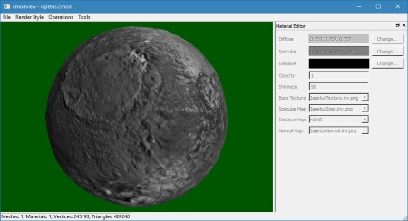
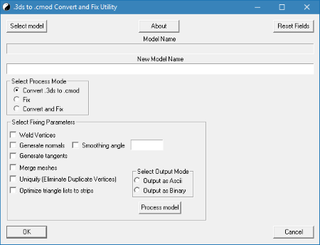
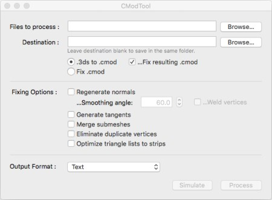
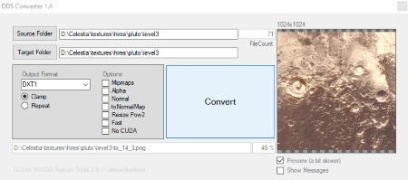

CmodView

CmodView is a program that can load and display Celestia’s native .cmod format used for 3D models. It shows the model how it would appear in-program and offers useful features to edit some of the its properties that cannot be done by other programs. CmodView can enable normal mapping on a mesh or change the color and texture of individual materials. When saving the .cmod file, it is converted into the more compact binary cmod format, improving performance in Celestia. Additionally, cmodview can also directly load the more common .obj format and convert it into a .cmod file.
3DS to CMOD converter for Windows

Contains a GUI Utility for Windows which will facilitate conversion of .3ds model format to .cmod model format with optional tweaking of the .cmod file.
Download
CMOD Tool for Mac

Contains a GUI Utility for converting .3ds model format to Celestia .cmod model format with optional tweaking of the .cmod file.
Download
Normal Map and Virtual Texture tools
 A set of command-based tools that can produce high-quality normal maps and virtual textures for use in Celestia, available for Windows, Linux and MAC.
The NmTools center on the conversion of topographical data into normal maps, reading binary files and outputting a texture that can be used in Celestia to display dynamic relief shading. The F-TexTools center on producing virtual textures from existing textures files. Virtual textures consist of image tiles that can be loaded individually to map out a planet’s surface in extremely high resolution.
The individual programs can be combined in one command to optimize the process without producing useless half-processed files. The texture tools are complimented with external programs for decompressing and texture conversion.
A set of command-based tools that can produce high-quality normal maps and virtual textures for use in Celestia, available for Windows, Linux and MAC.
The NmTools center on the conversion of topographical data into normal maps, reading binary files and outputting a texture that can be used in Celestia to display dynamic relief shading. The F-TexTools center on producing virtual textures from existing textures files. Virtual textures consist of image tiles that can be loaded individually to map out a planet’s surface in extremely high resolution.
The individual programs can be combined in one command to optimize the process without producing useless half-processed files. The texture tools are complimented with external programs for decompressing and texture conversion.
DDS Converter

A program for converting textures from .jpg or .png to .dds format, using NVIDIA Texture Tools. DDS files load faster into Celestia, improving performance.
The utility can load whole folders of textures and quickly convert them.
Download